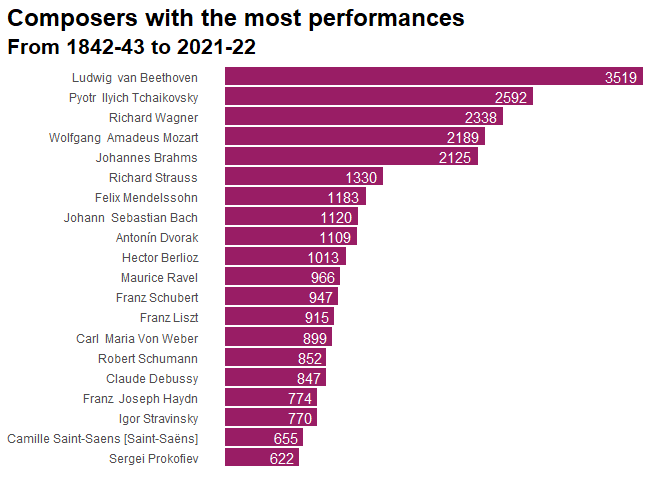

An R data package with performance history data from the New York Philharmonic.
Installation
You can install the development version of nyphil from GitHub with:
# install.packages("remotes")
remotes::install_github("drbtlr/nyphil")About the data
The nyphil package contains performance history data from all known concerts of the New York Philharmonic. Data were collected and made available by the New York Philharmonic Archives.
There are two datasets included in the package. The dataset nyphil is a lightly-cleaned, tidy version of the raw data; see ?nyphil for more info.
library(nyphil)
dplyr::glimpse(nyphil)
#> Rows: 154,988
#> Columns: 16
#> $ id <chr> "00646b9f-fec7-4ffb-9fb1-faae410bd9dc-0.1", "00646b~
#> $ program_id <chr> "3853", "3853", "3853", "3853", "3853", "3853", "38~
#> $ orchestra <chr> "New York Philharmonic", "New York Philharmonic", "~
#> $ season <chr> "1842-43", "1842-43", "1842-43", "1842-43", "1842-4~
#> $ event_type <chr> "Subscription Season", "Subscription Season", "Subs~
#> $ location <chr> "Manhattan, NY", "Manhattan, NY", "Manhattan, NY", ~
#> $ venue <chr> "Apollo Rooms", "Apollo Rooms", "Apollo Rooms", "Ap~
#> $ date <chr> "1842-12-07T05:00:00Z", "1842-12-07T05:00:00Z", "18~
#> $ time <chr> "8:00PM", "8:00PM", "8:00PM", "8:00PM", "8:00PM", "~
#> $ id_2 <chr> "52446*", "8834*4", "3642*", "3642*", "3642*", "364~
#> $ composer_name <chr> "Beethoven, Ludwig van", "Weber, Carl Maria Von~
#> $ work_title <chr> "SYMPHONY NO. 5 IN C MINOR, OP.67", "OBERON", "QUIN~
#> $ conductor_name <chr> "Hill, Ureli Corelli", "Timm, Henry C.", NA, NA, NA~
#> $ soloist_name <chr> NA, "Otto, Antoinette", "Scharfenberg, William", "H~
#> $ soloist_instrument <chr> NA, "Soprano", "Piano", "Violin", "Viola", "Cello",~
#> $ soloist_roles <chr> NA, "S", "A", "A", "A", "A", "A", NA, "S", "S", "S"~The dataset nyphil_raw contains all the variables and original names as downloaded; see ?nyphil_raw for more info.
Example
Users are encouraged to use these datasets for exploration, learning, and fun.
#> Warning: Expected 2 pieces. Missing pieces filled with `NA` in 1371 rows [77,
#> 97, 119, 126, 290, 515, 517, 519, 528, 530, 804, 902, 1307, 1581, 1857, 1960,
#> 2124, 2210, 2211, 2228, ...].
#> Selecting by n